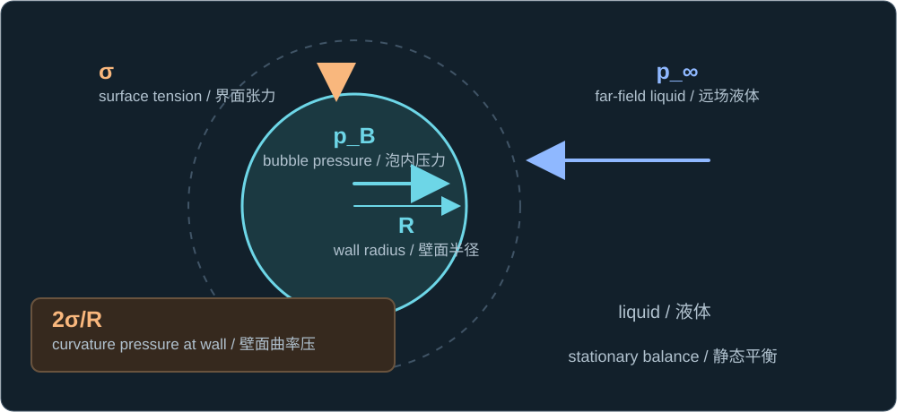
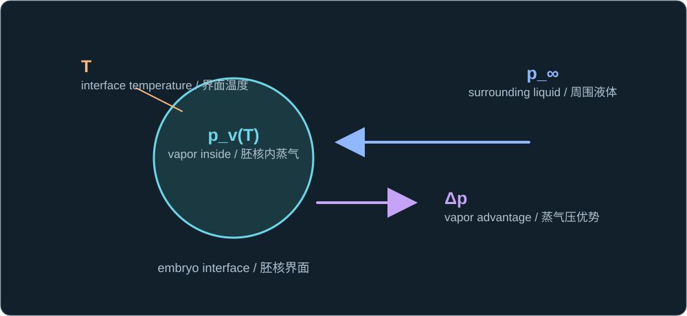
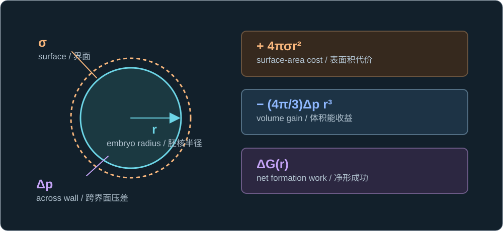
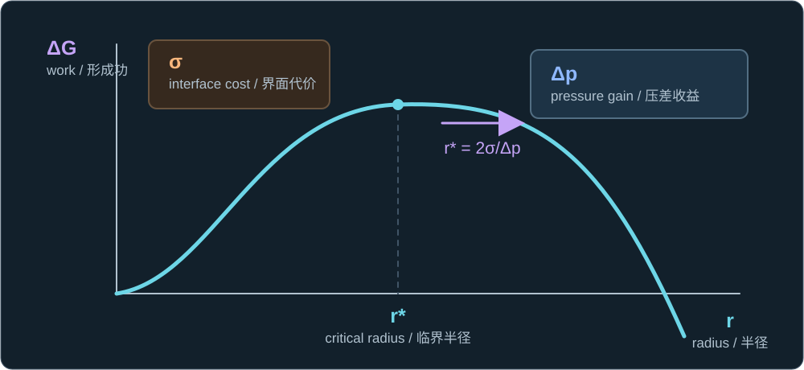
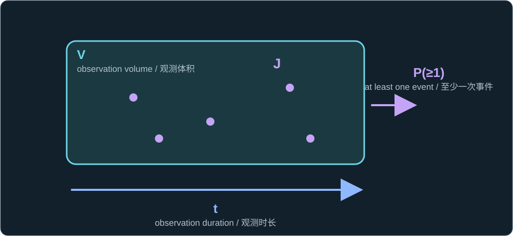
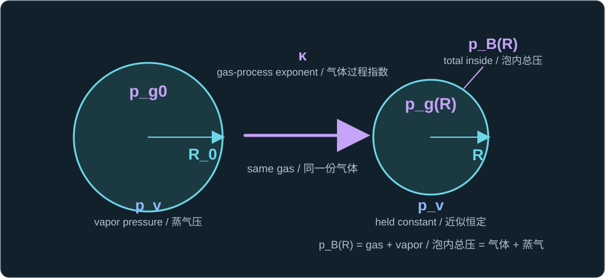

Historical lesson/review. Use the complete textbook course for the current study order. Former Chapters 4 and 5 are now Appendixes A and B.
历史课程／复习材料。当前学习顺序请使用完整教材课程。原第四、五章现为附录 A、B。
This chapter consolidates the completed Lessons 1–7. It preserves their original checks, including the three follow-up checks asked while we clarified inception and liquid inertia. Open each reference answer after attempting the question; the answers explain the governing formula first and connect to your earlier responses. The original lessons remain available for a slower derivation.
本章整合已经完成的第一至第七课，保留原有检查题，也收录在澄清空化初生与液体惯性时追问的三道题。请先自行作答，再展开参考答案；每份答案先写控制公式，并结合你此前的回答解释。原课程仍可用于放慢节奏复习推导。
Pressure changes acceleration; inertia carries motion
压力改变加速度；惯性使运动延续
A spherical bubble displaces liquid as its radius changes. At rest, its interior pressure exceeds the remote liquid pressure by the capillary pressure from surface tension. During motion, the pressure and interfacial stresses accelerate the surrounding liquid. When outward driving weakens, an already expanding wall can keep moving outward before slowing, turning, and collapsing.
球形气泡的半径变化会排开周围液体。静止平衡时，泡内压力比远处液体压力高出表面张力造成的毛细压差。运动时，压力与界面应力使周围液体加速。即使向外驱动力减弱，已经膨胀的泡壁仍可因惯性继续向外移动，然后减速、转向并塌缩。
pB − p∞ = 2σ/R (static equilibrium)

The pressure jump is a static reference state; a moving wall also involves liquid inertia.
该压差是静止参考状态；运动的泡壁还涉及液体惯性。
Include the surrounding liquid
把周围液体的压力计入平衡
Define an outward pressure surplus after subtracting ambient liquid pressure and surface tension. At a resting, balanced wall it is zero. If only ambient pressure rises instantaneously, the surplus becomes negative, so the initially resting interface accelerates inward. At nonzero wall speed, the full radial equation is needed to obtain acceleration.
定义向外压差余量：从泡内压力中扣除环境液体压力与表面张力项。静止平衡时，该余量为零。如果仅环境压力瞬时升高，余量会变为负值，因此原本静止的界面开始向内加速。壁速不为零时，则需使用完整径向方程求加速度。
D = pB − p∞ − 2σ/R

The sign of D identifies the initial acceleration direction from rest.
从静止出发时，D 的符号决定初始加速度方向。
Favorable growth and inception are different questions
有利于生长与能否初生是两个问题
The first two mini-lessons begin with an existing interface. To create an embryo in a clean liquid, a pressure-volume gain must overcome the cost of new surface. In the idealized homogeneous, spherical, isothermal model, the formation work initially rises with embryo radius, reaches a barrier at the critical radius, and then falls. A subcritical embryo tends to shrink when favorable fluctuations end.
前两节从已有界面出发。要在洁净液体中产生胚核，压差带来的体积能收益必须克服新建界面的表面能代价。在理想化、均匀、球形、等温模型中，形成功起初随胚核半径上升，在临界半径处达到能垒顶点，随后下降。当有利的涨落消失时，亚临界胚核倾向于缩小。
Δp = pv(T) − p∞ > 0

The pressure advantage acts across the embryo interface.
蒸气压优势作用于胚核界面两侧。
ΔG(r) = 4πσr² − (4π/3)Δp r³

This formation-work curve describes the specified clean-liquid pathway.
该形成功曲线描述指定的洁净液体成核路径。
r* = 2σ/Δp

The critical radius locates the maximum of the idealized clean-liquid barrier.
临界半径是这一理想化洁净液体能垒的最高点。
A trapped gas nucleus already has an interface; a particle or defect can offer another pathway. These cases cannot be described merely by lowering the barrier on the identical clean-liquid curve. Inception is also probabilistic: under an ideal independent-event, constant-rate model, the chance of at least one event depends on rate, sampled volume, and observation time. A short trial without cavitation does not prove impossibility.
被困气核已经具有界面；颗粒或缺陷也可能提供另一条路径。不能仅在同一条洁净液体曲线上调低能垒来描述这些情况。空化初生还具有概率性：在理想的独立事件、恒定速率模型中，至少发生一次事件的概率取决于成核率、采样体积与观测时间。一次短试验未出现空化，不能证明空化不可能发生。
P(≥1) = 1 − exp(−JVt)

The formula is an illustrative event model, not a universal cavitation threshold.
该公式是说明事件概率的模型，并非普适空化阈值。
Spherical continuity fixes the velocity field
球对称连续性决定速度场
For a spherical bubble in incompressible liquid, every concentric spherical surface carries the same instantaneous volume flux. The area grows with the square of distance from the center, so radial liquid speed falls with the inverse square. Its sign follows the signed wall speed: outward during expansion, inward during collapse.
对于不可压缩液体中的球形气泡，每个同心球面上的瞬时体积流量相同。球面积随距球心距离的平方增加，因此液体径向速度按平方反比减小。速度方向遵循带符号的壁速：膨胀时向外，塌缩时向内。
u(r,t) = (R/r)²Ṙ

The same flux passes the bubble wall and every outer spherical shell.
相同体积流量穿过泡壁和每个外侧同心球面。
The moving liquid has a radius-dependent inertia
运动液体的惯性随半径改变
Integrating the radial velocity field over liquid outside the bubble gives its kinetic energy. At fixed wall speed, doubling the bubble radius multiplies this energy by eight. The energy-equivalent radial mass represents the surrounding liquid's flow; it is not the mass of gas inside the bubble or a literal bounded shell of all moving liquid.
对气泡外侧液体的径向速度场积分，可得到其动能。壁速固定时，气泡半径加倍使动能变为八倍。由动能定义的径向等效质量表示周围液体的流动惯性；它既不是泡内气体的质量，也不是某个包含全部运动液体的有限厚度壳层的实际质量。
T = ½ρ∫R∞u²4πr²dr = 2πρR³Ṙ²

Each shell contributes to the surrounding liquid's kinetic energy.
每个球壳都对周围液体的动能作出贡献。
T = ½MR(R)Ṙ², MR(R) = 4πρR³

The effective mass grows with the region of liquid set into radial motion.
径向等效质量随被带动的液体区域增大而增加。
The spherical Rayleigh–Plesset equation balances liquid inertia against interior pressure, ambient pressure, surface tension, and viscosity. It predicts the motion of an existing bubble only after initial conditions and an interior-pressure law are supplied.
球对称 Rayleigh–Plesset 方程将液体惯性与泡内压力、环境压力、表面张力和黏性相平衡。只有给定初始条件及泡内压力规律后，它才能预测已有气泡的运动。
ρ[R R̈ + (3/2)Ṙ²] = pB − p∞ − 2σ/R − 4μṘ/R

The squared-speed term shows why a pressure sign alone need not be the acceleration sign during motion.
壁速平方项说明：在运动过程中，压差的符号不能单独决定加速度符号。
Separate noncondensable gas from vapor
区分不凝性气体与蒸气
The radial equation needs a closure for the bubble contents. In a simple uniform-interior model, total bubble pressure is the sum of gas and vapor partial pressures. A fixed amount of gas follows an assumed polytropic compression law. Vapor pressure may instead be treated as approximately constant at a nearly fixed interface temperature because vapor can evaporate or condense; that is an additional approximation.
径向方程需要泡内物质的闭合关系。在简单的均匀泡内模型中，总压等于气体与蒸气分压之和。固定量的气体遵循所假设的多方压缩规律。若界面温度近似不变，蒸气可蒸发或凝结，因此可另作蒸气压近似恒定的假设；这是额外的近似。
pB(R) = pg0(R0/R)3κ + pv

Only the gas term gains the radius-dependent compression factor in this model.
在这一模型中，只有气体项乘上随半径变化的压缩因子。
Pressure work sets the scale; integration sets 0.915
压力功决定尺度；积分给出 0.915
For an initially stationary spherical cavity in an infinite incompressible liquid, omit noncondensable gas, viscosity, and surface tension, and hold ambient and vapor pressure constant. Pressure work scales with the cavity volume. Balancing that work with the kinetic energy of the displaced liquid gives the proportional collapse-time scale, without a numerical factor.
考虑无限延伸的不可压缩液体中、初始静止的球形空腔；忽略不凝性气体、黏性与表面张力，并令环境压力和蒸气压恒定。压力功按空腔体积缩放。使该压力功与被带动液体的动能平衡，可得到塌缩时间的比例尺度，但尚不能得到数值系数。
Δp = p∞ − pv > 0

The ideal inward gap is assumed constant throughout collapse.
理想模型假设这一向内压差在整个塌缩过程中恒定。
Δp Rmax³ ∼ ρRmax³(Rmax/t)²
⇒ t ∝ Rmax√(ρ/Δp)

This dimensional balance gives the proportional dependence only.
这一量纲平衡只给出比例关系。
Integrating the ideal radial equation from maximum radius to zero gives a dimensionless integral. Its value supplies the coefficient. The zero-radius endpoint is an ideal mathematical limit; gas compression, finite sound speed, heat and mass transfer, and shape change intervene in real bubbles. A real bubble may rebound or form a jet.
将理想径向方程从最大半径积分到零，可得到无量纲积分，其值给出系数。半径为零是理想数学极限；真实气泡中，气体压缩、有限声速、传热传质与形状变化会先发挥作用。真实气泡可能回弹，也可能形成射流。
tc = Rmax√[3ρ/(2Δp)]∫01x3/2/√(1 − x³) dx

The integral sums the time taken over all stages of ideal radial collapse.
该积分累加理想径向塌缩各阶段所需的时间。
tc ≈ 0.915 Rmax√(ρ/Δp)

The integral equals approximately 0.746834; multiplying by √(3/2) gives 0.914681, rounded to 0.915.
积分约为 0.746834；乘以 √(3/2) 得到 0.914681，取三位小数为 0.915。
All ten checks and reference answers
全部十道检查题及参考答案
The seven current lesson checks retain their wording. Three replaced prompts are reconstructed from the teaching log and your replies and marked accordingly. Earlier responses are evidence of what you understood at that point; follow-up answers show the refinement.
七道现存课程检查题保留原文。另有三道后来被替换的题目，根据教学日志和你的回答重建，并明确标注。较早的回答反映当时的理解；后续答案展示进一步的澄清。
Lesson 1. In your own words, why might a cavitation bubble grow and then collapse?
第一课。请用自己的话解释：空化气泡为何可能先长大、后塌缩？
Reference answer / 参考答案
ρ[R R̈ + (3/2)Ṙ²] = pB − p∞ − 2σ/R − 4μṘ/R
Pressure and stresses accelerate the liquid surrounding the moving boundary.
压力与应力使移动边界周围的液体加速。
Outward pressure surplus can start growth. The liquid then has outward momentum, so the radius may still rise after the drive weakens. A later inward acceleration reduces Ṙ to zero; only then does Ṙ become negative and collapse begin. Your first answer captured this inertia-delayed turn. The complete pressure comparison also includes ambient liquid pressure, which the next check made explicit.
向外压差可使气泡开始生长。随后液体具有向外动量，因此即使驱动力减弱，半径仍可能继续增大。之后向内的加速度使 Ṙ 降至零；只有 Ṙ 随后变负，塌缩才开始。你最初的回答抓住了惯性造成的延迟转向；完整压力比较还需明确包括环境液体压力，这也是下一题的重点。
Lesson 2. A clean spherical bubble is initially at rest and in pressure balance. Its inside pressure and radius stay unchanged for the next instant, but the surrounding liquid pressure rises. Which way does the bubble boundary initially accelerate, and why?
第二课。一个洁净球形气泡起初静止并处于压力平衡。下一瞬间泡内压力和半径不变，但周围液体压力升高。泡壁最初向哪个方向加速？为什么？
Reference answer / 参考答案
D = pB − p∞ − 2σ/R
Only p_∞ rises from an initially balanced, motionless state.
从初始静止平衡态出发，仅 p_∞ 升高。
Initially D = 0 and Ṙ = 0. Raising p∞ while holding pB and R fixed makes D < 0. The squared-speed and viscous terms vanish at this initial instant, so R̈ < 0: the wall accelerates inward. This is the result and sign argument you gave.
初始时 D = 0 且 Ṙ = 0。保持 pB 与 R 不变而升高 p∞，得到 D < 0。在这一初始瞬间，壁速平方项与黏性项均为零，因此 R̈ < 0，泡壁向内加速。这与你给出的结果和符号判断一致。
Lesson 3, first prompt (reconstructed). Under the same pressure pulse, why might a sample with a pre-existing gas nucleus cavitate while a cleaner sample does not?
第三课，首道题（重建）。在相同压力脉冲下，为什么已有气核的样品可能发生空化，而更洁净的样品没有？
Reference answer / 参考答案
ΔG(r) = 4πσr² − (4π/3)Δp r³
This equation describes forming a new spherical interface in the clean-liquid model.
该式描述洁净液体模型中新球形界面的形成。
A gas nucleus begins with an existing interface, whereas the clean sample may need to create one. Thus the pathways and initial states differ. Your first response correctly anticipated easier inception with a nucleus. Its phrase about simply requiring less ΔG on the same curve needed refinement: this clean-liquid formula need not describe the gas-nucleus pathway. Also, a clean sample's non-event under one pulse is not proof that it could never cavitate.
气核起初就有界面，洁净样品则可能需要新建界面，因此两者的初始状态和路径不同。你首次回答正确预见了已有气核使初生更容易；但“在同一曲线上所需 ΔG 更少”这一表述需修正：该洁净液体公式未必能描述气核路径。此外，一次脉冲中洁净样品未发生空化，也不能证明它永远不会发生。
Lesson 3, follow-up (reconstructed). Does one short pulse with no observed cavitation prove that cavitation was impossible?
第三课，追问（重建）。一次短脉冲没有观察到空化，是否证明空化不可能发生？
Reference answer / 参考答案
P(≥1) = 1 − exp(−JVt)
A finite observation may show no event even when its probability is positive.
即使事件概率为正，有限观测仍可能没有事件。
No. For finite J, V, and t, the ideal model gives a probability between zero and one. A zero-event observation remains possible when J > 0. Your reply also noted that an embryo can remain below the critical radius and then shrink; that is a possible physical route to a non-event, while the probability model explains why the observation does not establish impossibility.
不能。对于有限的 J、V 与 t，该理想模型给出的概率介于零与一之间；即使 J > 0，仍可能观测到零事件。你还指出胚核可能停留在临界半径以下、随后缩小；这是一种可能的未发生事件的物理路径，而概率模型说明为何该观测不能证明“不可能”。
Lesson 3, final check. Twenty fresh clean samples receive identical short pressure pulses; two show cavitation. What does this say about the claim that the other eighteen were incapable of cavitating under that pulse?
第三课，最终检查。二十份新的洁净样品受到相同的短时压力脉冲，其中两份出现空化。这对“另外十八份样品在该脉冲下不可能发生空化”的说法意味着什么？
Reference answer / 参考答案
P(≥1) = 1 − exp(−JVt)
Identical macroscopic pulses can produce different event outcomes.
宏观条件相同的脉冲也可能产生不同的事件结果。
The eighteen non-events do not show that those samples were incapable. In the ideal independent-trial picture, the two observed events and eighteen non-events are compatible with an event probability below one. The observed fraction, 2/20 = 0.10, is a sample frequency, not a proof of any individual sample's deterministic threshold. Your final response correctly distinguished a low probability from impossibility and cited the event model.
十八次未发生事件，不能证明那些样品无法空化。在理想的独立试验图景中，两次事件和十八次未发生事件与小于一的事件概率相容。观测比例 2/20 = 0.10 是样本频率，不能证明任何一份样品存在确定性阈值。你的最终回答正确区分了低概率与不可能，并引用了事件模型。
Lesson 4. A spherical bubble wall moves outward at 8 m/s. Under this model, what are the speed and direction of the liquid at r = 2R, and why?
第四课。球形气泡壁面以 8 m/s 向外运动。在该模型下，半径 r = 2R 处液体的速度大小和方向是什么？为什么？
Reference answer / 参考答案
u(r,t) = (R/r)²Ṙ
Incompressibility makes radial speed fall as the sphere area grows.
不可压缩条件使径向速度随球面积增大而减小。
Substitute r = 2R and Ṙ = +8 m/s: u(2R,t) = (1/2)²(8 m/s) = +2 m/s. The positive sign means outward. You gave both the value and the inverse-square reason correctly.
代入 r = 2R 和 Ṙ = +8 m/s，得 u(2R,t) = (1/2)²(8 m/s) = +2 m/s。正号表示向外。你此前正确给出了数值和平方反比原因。
Lesson 5, first prompt (reconstructed). At fixed wall speed, if bubble radius doubles, by what factor does the surrounding liquid's kinetic energy change?
第五课，首道题（重建）。壁速不变而气泡半径加倍时，周围液体的动能变为原来的多少倍？
Reference answer / 参考答案
T = 2πρR³Ṙ²
Compare two bubble radii at the same liquid density and wall speed.
比较液体密度和壁速相同的两个气泡半径。
Keeping ρ and Ṙ fixed gives T(2R)/T(R) = (2R)³/R³ = 8. Your answer “8; kinetic energy grows with the cube of radius” was correct. The next question asked for the physical meaning behind this scaling.
保持 ρ 与 Ṙ 不变，得到 T(2R)/T(R) = (2R)³/R³ = 8。你回答的“8；动能按半径三次方增长”是正确的。下一题追问这一尺度关系的物理含义。
Lesson 5, follow-up. If the wall speed stays fixed while the bubble radius grows, what physical change in the surrounding liquid makes a constant-mass particle model for the bubble wall inaccurate?
第五课，追问。如果壁速固定而气泡半径增大，周围液体发生什么变化，使恒定质量的泡壁粒子模型不准确？
Reference answer / 参考答案
T = ½MR(R)Ṙ², MR(R) = 4πρR³
MR summarizes the kinetic energy of the radial liquid flow.
MR 概括径向液体流动的动能。
A larger bubble sets a larger region of surrounding liquid into radial motion at a given wall speed. Thus its energy-equivalent radial mass grows as R³, whereas a constant-mass particle model would miss that dependence. Your follow-up correctly identified surrounding liquid rather than fixed bubble contents as the source of this inertia.
在相同壁速下，较大的气泡带动更大范围的周围液体作径向运动。因此按动能定义的径向等效质量随 R³ 增长，而恒定质量的粒子模型会遗漏这一依赖。你的追问回答正确指出惯性来自周围液体，而不是固定的泡内物质。
Lesson 6. If R falls from R0 to R0/2 with κ = 1 and constant pv, does the whole bubble pressure become eight times its initial value? Explain using pg0 and pv.
第六课。若 R 从 R0 降到 R0/2，且 κ = 1、pv 恒定，整个泡内压力是否变为初值的八倍？请用 pg0 和 pv 解释。
Reference answer / 参考答案
pB(R) = pg0(R0/R)3κ + pv
The compression factor applies to gas, not the constant vapor term.
压缩因子作用于气体项，而非恒定的蒸气项。
At the reference radius, pB0 = pg0 + pv. At half radius with κ = 1, the gas term becomes pg0(2)³ = 8pg0, so pB(R0/2) = 8pg0 + pv. In general this is not 8(pg0 + pv). Your response correctly said the vapor term does not multiply by eight.
在参考半径处，pB0 = pg0 + pv。当 κ = 1 且半径减半时，气体项变为 pg0(2)³ = 8pg0，因此 pB(R0/2) = 8pg0 + pv。一般情况下，它不等于 8(pg0 + pv)。你此前正确指出蒸气项不乘以八。
Lesson 7. Two ideal cavities have the same Rmax and liquid density, but the second has four times the inward pressure gap Δp. How do its collapse time and the coefficient 0.915 compare with the first, and why?
第七课。两个理想空腔具有相同的 Rmax 和液体密度，但第二个的向内压差 Δp 为第一个的四倍。其塌缩时间和系数 0.915 如何比较？为什么？
Reference answer / 参考答案
tc ≈ 0.915 Rmax√(ρ/Δp)
Only the pressure gap changes between the two otherwise identical ideal cases.
在其他条件相同的两个理想情形中，只有压差改变。
At fixed Rmax and ρ, the time ratio is √(Δp1/Δp2) = √(1/4) = 1/2. The coefficient 0.915 remains unchanged because both cases use the same dimensionless radial-collapse integral and assumptions. This matches your answer. If gas or other omitted physics changes the collapse model, that benchmark coefficient need not govern the actual duration.
当 Rmax 与 ρ 固定时，时间比为 √(Δp1/Δp2) = √(1/4) = 1/2。系数 0.915 保持不变，因为两个情形采用相同的无量纲径向塌缩积分和假设。这与你的回答一致。若气体或其他被省略的物理过程改变塌缩模型，该基准系数就未必决定实际历时。
These are archived checks from completed Lessons 1–7. Chapters 1–2 are also complete; Chapter 3 begins the project-specific theory.
这些是已完成第一至第七课的归档检查题。第一、二章也已完成；第三章开始项目专属理论。
Sources: supplied bubble-dynamics book, Chapters 2–5; Brennen, Chapter 1 and Chapter 2. The questions and learner-response notes are reconstructed from the completed lesson pages and local learning records.
资料：所提供气泡动力学教材第二至五章；Brennen 著作第一章及第二章。题目与学习者回答记录依据已完成课程页面及本地学习记录整理。